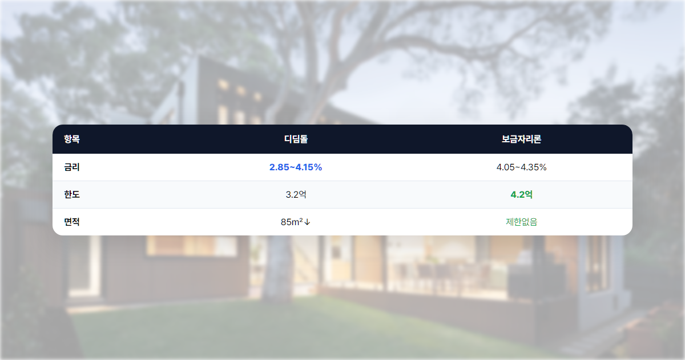
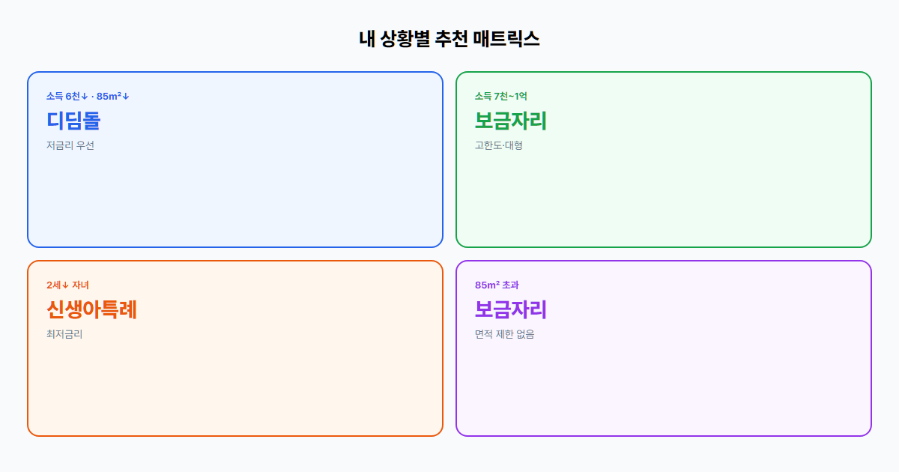

보금자리론 vs 디딤돌, 월급쟁이는 뭐가 더 유리할까?
정책대출 두 갈래, 내 상황에 맞는 선택은?
"내집마련, 어떤 대출이 유리할까?" 첫 집을 알아보면 디딤돌·보금자리론 이름은 들어봤는데, 정작 금리·한도·자격이 어떻게 다른지 헷갈리는 분이 많습니다. 2026년 현재 금리는 다소 안정 국면이지만 LTV·DSR 규제는 여전히 빡빡하고, 잘못 고르면 대출 한도 1~2억원, 이자만 해도 연 100~200만원 차이가 날 수 있습니다. 이 글에서는 두 상품을 나란히 놓고 비교하고, 월급쟁이 시나리오별 추천까지 정리합니다.
- 디딤돌·보금자리론 자격·금리·한도를 표로 한눈에 비교합니다.
- LTV·DTI 개념과 실제 계산 예시를 통해 내 한도를 가늠합니다.
- 소득·주택 조건에 따른 시나리오별 추천과 신청 절차·FAQ까지 담았습니다.
본론 1. 디딤돌 대출 완전 분석
디딤돌 대출이란?
디딤돌 대출은 무주택 서민·실수요자가 주택을 구입할 때 받을 수 있는 정부 지원 주택자금입니다. 한국주택금융공사(HF)가 운영하며, 2009년 글로벌 금융위기 이후 서민 주거 안정을 위해 본격 확대된 상품입니다. 시중은행 주택담보대출보다 금리가 낮고 LTV·DTI 기준이 정책적으로 설계되어 있어, "작은 집을 저금리로 사는" 목적에 가깝다고 이해하시면 됩니다. 부부합산 소득 6~7천만원대, 5억 이하·85㎡ 이하 주택을 노리는 분에게 특히 잘 맞습니다.
자격 조건 상세
| 항목 | 조건 |
|---|---|
| 소득 | 부부합산 연 6천만원 이하 (신혼·2자녀·생애최초 7천만원) |
| 주택가격 | 5억원 이하 (신혼·2자녀 6억원) |
| 면적 | 전용 85㎡ 이하 (수도권 외 읍·면 100㎡) |
| 무주택 | 세대구성원 전원 무주택 |
예를 들어 맞벌이 부부 연소득 5,800만원, 매매가 4억 2천만원, 전용 59㎡ 아파트라면 소득·가격·면적 조건을 모두 충족합니다. 반면 연 7,200만원이면 일반 디딤돌 소득 기준을 넘어 바로 탈락하므로, 보금자리론을 검토해야 합니다.
⚠️ 흔히 놓치는 함정
- 부모 명의 주택이 있으면 세대원 전원 무주택 조건에 걸릴 수 있습니다. 주민센터·정부24 무주택 확인 필수입니다.
- 세대 분리만으로 무주택이 인정되지 않는 경우가 있습니다. 실거주·등본 상태를 함께 확인하세요.
- 배우자가 과거 주택을 증여·상속받은 이력이 있으면 심사에서 제외될 수 있습니다.
금리 상세
2026년 기준 디딤돌 금리는 대략 연 2.85%~4.15% 구간에서 소득·만기·금리 유형에 따라 달라집니다. 만기가 길수록, 소득 구간이 높을수록 금리가 소폭 올라가는 구조입니다.
| 만기 | 고정금리(예시) | 5년 변동(예시) |
|---|---|---|
| 10년 | 2.85~3.35% | 2.75~3.25% |
| 15년 | 3.05~3.55% | 2.95~3.45% |
| 20년 | 3.25~3.75% | 3.15~3.65% |
| 30년 | 3.55~4.15% | 3.45~4.05% |
고정금리는 만기 내내 같은 금리, 5년 단위 변동은 5년마다 재산정됩니다. 금리 하락 기대가 크지 않다면 고정을, 초기 부담을 줄이려면 변동을 검토할 수 있습니다.
우대금리(최대 1.0%p):
- 청약저축·청약통장 가입 0.1%p
- 부동산 전자계약·전자등기 0.1%p
- 다자녀(2자녀 이상) 0.5%p
- 신혼부부 0.2%p
- 기타 HF·은행별 우대 합산 최대 1.0%p
현실적으로 청약통장+전자계약+신혼 우대를 받으면 0.4%p 정도, 2자녀 가구는 0.7~1.0%p까지 가능합니다. 기본 3.5%에서 1.0%p 우대 시 2.5%대까지 내려갈 수 있습니다.
한도 및 LTV/DTI
LTV(담보인정비율)는 주택 가격 대비 대출 가능 비율, DTI(총부채상환비율)는 연소득 대비 연간 원리금 상환액 비율입니다. 디딤돌은 LTV 70%, DTI 60%가 기본입니다.
- 일반: 최대 2억원
- 생애최초: 2.4억원
- 신혼·2자녀 이상: 3.2억원
연소득 5,000만원, 매매가 3억원 아파트 → LTV 70%면 담보 기준 2.1억원. DTI 60%면 연 상환 한도 약 3,000만원 수준이므로, 실제 실행 한도는 2억~2.1억원 근처에서 결정됩니다. 생애최초라면 상품 한도 2.4억까지 열려 있으나, DTI·DSR에 의해 더 낮아질 수 있습니다.
거치기간 1년 또는 비거치, 만기 10~30년 중 선택합니다. 거치 시 초기 1년간 이자만 내고, 이후 원리금을 갚습니다.

본론 2. 보금자리론 완전 분석
보금자리론이란?
보금자리론은 HF가 운영하는 정책 모기지로, 디딤돌보다 소득·주택가격 기준이 완화되어 중산층 실수요자까지 포괄합니다. 디딤돌이 "저소득·소형주택·초저금리"라면, 보금자리론은 "더 큰 집·더 높은 한도·더 긴 만기"를 위한 유연한 옵션에 가깝습니다. 2026년 4월부터 아낌e보금자리론 등 일부 상품 금리가 0.30%p 인상되었으나, 시중은행 대출 대비 여전히 경쟁력이 있습니다. 소득 7천만~1억원, 85㎡ 초과, 5~6억대 주택을 보는 분에게 적합합니다.
자격 조건 상세
| 항목 | 조건 |
|---|---|
| 소득 | 부부합산 연 7천만원 이하 (신혼 8,500만, 다자녀 1억) |
| 주택가격 | 6억원 이하 |
| 면적 | 제한 없음 ⭐ |
| 주택 보유 | 무주택 또는 1주택(처분 조건) |
1주택자는 기존 주택을 2년 내 처분하는 조건 하에 신청할 수 있습니다. 갈아타기·지방 이전 등 상황에서 활용됩니다. 면적 제한이 없다는 점이 큰 장점입니다. 디딤돌은 85㎡를 넘으면 아예 문이 닫히지만, 보금자리론은 30평대·40평대도 가능합니다.
신혼부부 연 8,500만원, 다자녀 1억원까지 소득 기준이 올라가 디딤돌에서 탈락한 맞벌이도 자격을 확보할 수 있습니다.
금리 상세
2026년 기준 아낌e보금자리론 금리는 대략 연 4.05%~4.35%입니다. 디딤돌보다 1%p 이상 높은 편이지만, 한도·면적·대환 측면에서 보완됩니다.
- u-보금자리론: 일반형, 비대면·간편 신청
- 아낌e보금자리론: 전자약정·에너지 효율 등 우대 연계
- t-보금자리론: 특정 조건·지역 맞춤형
우대금리 최대 1.0%p(전자약정·등기·다자녀 등)를 적용하면 3%대 후반까지 가능합니다. 만기별로는 10·15·20·30·40·50년이 있으며, 40·50년은 만 39세 이하 등 연령 조건이 붙습니다.
한도 및 LTV/DTI
- 일반: 최대 3.6억원
- 생애최초: 4.2억원
- 다자녀·전세사기피해자: 4억원
LTV·DTI는 디딤돌과 동일하게 70%·60%입니다. 원리금 균등 상환이 기본으로, 매달 같은 금액을 갚습니다.
대출 3억원, 금리 4.2%, 30년 → 월 약 146만원 / 50년 → 월 약 120만원 (약 26만원 절감). 총 이자는 늘지만 초기 현금흐름 부담을 줄일 수 있습니다.
보금자리론의 강점은 기존 주담대 대환이 가능하다는 점입니다. 금리 높은 시중 대출을 갈아탈 때 활용합니다. 디딤돌은 대환이 불가합니다.
핵심 비교표 + 해설
| 비교 항목 | 디딤돌 | 보금자리론 |
|---|---|---|
| 금리 | 2.85~4.15% ⭐ | 4.05~4.35% |
| 최대 한도 | 3.2억원 | 4.2억원 ⭐ |
| 소득 기준 | 6~7천만원 | 7천~1억원 ⭐ |
| 주택가격 | 5~6억 | 6억 |
| 면적제한 | 85㎡ ⭐(소형) | 없음 ⭐ |
| 대환 | 불가 | 가능 ⭐ |
| 만기 | 10~30년 | 10~50년 ⭐ |
| 중도상환수수료 | 있음(3년 내) | 없음 ⭐ |
금리는 디딤돌이 유리합니다. 2억 대출 기준 1%p 차이면 연 200만원 이자 차이입니다. 한도·소득·면적은 보금자리론이 넓습니다. 85㎡ 넘는 집, 6천만원 넘는 소득이면 디딤돌은 애초에 불가합니다. 대환·중도상환은 보금자리론이 유리해, 향후 금리·소득 변화에 유연하게 대응할 수 있습니다. 월급쟁이에게는 "자격 되면 디딤돌, 안 되면 보금자리론"이 기본 공식입니다.
본론 3. 어떤 게 나에게 유리한가?
디딤돌이 유리한 경우
① 부부합산 소득 6천만원 이하(우대 시 7천만원)
② 매매가 5억 이하, 전용 85㎡ 이하
③ 신혼·생애최초·2자녀 등 우대 한도 활용
④ 금리 1%p 절감이 최우선 — 2억 대출 시 연 200만원, 30년 누적 6천만원 이상 차이 가능
💡 시뮬레이션 1 — 맞벌이 5,500만원, 인천 3.5억 아파트
- 전용 74㎡, 생애최초 → 디딤돌 자격 OK
- 대출 2.4억, 금리 3.0%(우대 후) → 월 약 101만원 (30년 원리금)
- 보금자리론 4.2% 가정 시 월 115만원 → 연 168만원 차이
보금자리론이 유리한 경우
① 소득 6천만원 초과 (디딤돌 탈락)
② 85㎡ 초과 주택, 5~6억대 매매
③ 기존 주담대 대환 필요
④ 50년 만기로 월 상환 부담 최소화
💡 시뮬레이션 2 — 맞벌이 7,500만원, 경기 5.5억 30평대
- 전용 99㎡, 디딤돌 면적·소득 모두 초과 → 디딤돌 불가
- 보금자리론 3.6억, 4.2%, 40년 → 월 약 152만원
- 시중은행 5%대 대비 연 100~150만원 절감 가능
둘 다 안 되는 경우
소득·주택가격·면적·보유 주택 조건을 모두 넘으면 시중은행 주택담보대출을 검토합니다. 신생아 특례대출(소득 1.3억까지, 2년 내 출산)이나 청년 버팀목 전세대출(전세 거주 시)도 대안입니다.
절대 비교 결과
소득·주택가격·면적에 따라 실행 한도가 1~2억원 달라질 수 있습니다. "디딤돌이 무조건 좋다"거나 "보금자리론이 무조건 낫다"가 아니라, HF 홈페이지 한도·금리 시뮬레이션(약 5분)을 두 상품 모두 돌려본 뒤 결정하세요.

자주 묻는 질문 (FAQ)
Q1. 두 상품을 동시에 받을 수 있나요?
불가능합니다. 디딤돌과 보금자리론은 모두 HF 정책대출로, 동일 주택·동일 차주 기준 하나만 선택해야 합니다. 분할 실행도 원칙적으로 불가하며, 한 상품으로 통합 실행합니다.
Q2. 중도상환수수료는?
디딤돌은 대출 후 3년 이내 중도상환 시 수수료(약 1.2~1.4%)가 부과될 수 있습니다. 보금자리론은 중도상환수수료가 없어 여유 자금이 생기면 수수료 부담 없이 상환할 수 있습니다.
Q3. 신청은 어디서 하나요?
국민·신한·우리·하나·NH농협·IBK기업·SC제일·씨티·수협 등 HF 취급 9개 시중은행 영업점 또는 비대면 채널에서 신청합니다. HF 홈페이지에서 먼저 자격·한도를 조회한 뒤, 희망 은행으로 서류를 제출합니다.
Q4. 청약통장 가입자 우대금리는?
디딤돌·보금자리론 모두 청약저축·청약통장 가입 시 0.1%p 우대가 적용됩니다. 청년주택드림청약통장 등은 별도 상품이므로, 디딤돌 우대와 중복 적용 범위는 은행·HF에 확인하세요.
Q5. 부모님 명의 주택이 있어도 무주택 인정되나요?
세대원 전원 무주택이 원칙입니다. 부모와 동일 세대이고 부모 명의 주택이 있으면 무주택으로 보지 않습니다. 세대 분리·별도 거주·무주택 확인서로 입증해야 하며, 심사에서 추가 서류를 요구할 수 있습니다.
Q6. 분양 아파트도 가능한가요?
입주 잔금대출 형태로 가능합니다. 분양 계약 후 입주 시점에 매매가·면적·소득 기준을 충족하면 잔금을 디딤돌 또는 보금자리론으로 실행합니다. 중도금 대출과는 별개이므로 일정을 미리 맞춰두세요.
Q7. 처리 기간은 얼마나 걸리나요?
서류 제출 후 심사·실행까지 보통 1~2주, 바쁜 시기에는 3주까지 걸릴 수 있습니다. 잔금일 2~3주 전 신청을 권장하며, HF 사전 한도 조회로 서류 누락을 줄이세요.
신청 절차 안내
- HF 홈페이지 자격·한도 조회 — 디딤돌·보금자리론 각각 시뮬레이션 (약 5분)
- 서류 준비 — 소득금액증명원, 가족관계·주민등록등본, 매매계약서, 무주택 확인서 등
- 시중은행 신청 — 영업점 방문 또는 모바일·인터넷 뱅킹 (은행별 상이)
- 심사 — 1~2주, 담보·소득·DSR 재확인
- 대출 실행 — 잔금일에 seller 계좌로 입금
📋 신청 팁
- 가계약 전 사전 한도 조회로 "잔금일 못 맞추는" 상황을 방지하세요.
- 우대금리 서류(청약통장, 전자계약 등)는 실행 전 미리 준비하면 금리 협의가 수월합니다.
- 은행별 우대·프로모션이 다르므로 2곳 이상 견적을 받아보세요.
결론
월급쟁이 내집마련의 핵심은 자격에 맞는 상품을 고르는 것입니다. ① 소득·면적이 디딤돌 기준 안이면 디딤돌 1순위(금리·이자 절감). ② 소득·면적·대환 때문에 디딤돌이 안 되면 보금자리론. ③ 반드시 HF 시뮬레이션을 둘 다 돌려본 뒤 월 상환액·총 이자를 비교하세요.

본 글은 2026년 6월 기준 일반 정보이며, 금리·소득 기준·대출 조건은 정부 고시·은행별로 달라질 수 있습니다. 대출 신청 전 HF공사 또는 취급 은행에서 최종 확인하시기 바랍니다.